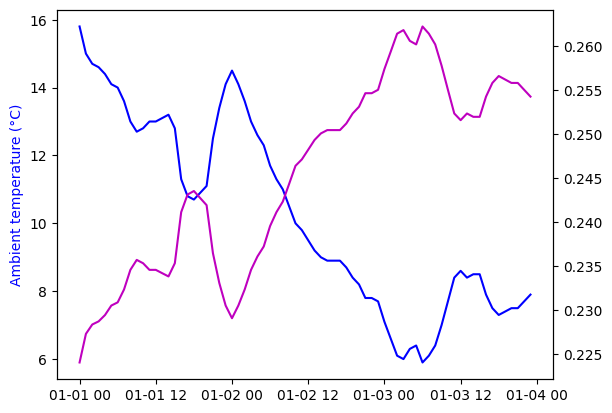

oemof-solph model with variable partload efficiency#
take coefficients from tespy model
build offset transformer model
apply coefficients with interpolation on temperature curve
compare results with previous part load model without the part load efficiency
import pandas as pd
import numpy as np
import matplotlib.pyplot as plt
def load_temperature_data():
"""Returns temperature (in °C) over timestamp
"""
# weather data from https://wetterstation.physik.rwth-aachen.de/datenbank.php
df = pd.read_csv("../2023_Stundenstatistik.txt", delim_whitespace=True)
df.index = (pd.to_datetime(
[
f"{year}-{month}-{day} {hour}:00:00"
for year, month, day, hour in zip(df['#Jahr'], df['Monat'], df['Tag'], df['Stunde'])
]
))
# hack to allow float == float (only valid for integers)
df = 10 * df[["T_Mid"]]
df.rename(columns={"T_Mid": "Ambient temperature (d°C)"}, inplace=True)
return df
input_data = load_temperature_data().head(24*3)
# A crude demand model should be enough for us. Let the demand be 500 W per K below 15 °C.
input_data["Heat load (kW)"] = (0.5 * (15 - 0.1*input_data["Ambient temperature (d°C)"])).clip(lower=0)
def load_tespy_coefficients():
df = pd.read_csv("coefficients-offset-transformer.csv", index_col=[0])
# hack to work with floats as index
df2 = df.reindex(np.arange(-100, 210, 1)/10)
df2["slope"] = pd.Series.interpolate(df2["slope"])
df2["offset"] = pd.Series.interpolate(df2["offset"])
df2.index = 10 * df2.index
return df2
tespy_coefficients = load_tespy_coefficients()
input_data["slope"] = input_data["Ambient temperature (d°C)"].map(tespy_coefficients["slope"])
input_data["offset"] = input_data["Ambient temperature (d°C)"].map(tespy_coefficients["offset"])
plt.plot(input_data["Ambient temperature (d°C)"]/10, "b-")
plt.ylabel("Ambient temperature (°C)").set_color("blue")
plt.twinx()
# plt.plot(input_data["offset"], "r-")
plt.plot(1/input_data["slope"], "m-")
plt.show()

With respect to the previous version (solph-minimal-load), a the Transformer is replaced by an OffsetTransformer.
import oemof.solph as solph
hp_thermal_power = 9.1 # kW
slope = input_data["slope"][:-1]
offset = input_data["offset"][:-1]/1e3
demand = input_data["Heat load (kW)"][:-1]
es = solph.EnergySystem(timeindex=input_data.index, infer_last_interval=False)
b_electricity = solph.Bus(label="electricity")
b_heat_35C = solph.Bus(label="heat 35C")
es.add(b_electricity, b_heat_35C)
electricity_grid = solph.components.Source(
label="electricity grid",
outputs={b_electricity: solph.Flow(variable_costs=0.4)}, # €/kWh
)
heat_demand = solph.components.Sink(
label="heat demand",
inputs={b_heat_35C: solph.Flow(nominal_value=1, fix=demand)}, # kW
)
es.add(electricity_grid, heat_demand)
heat_pump = solph.components.OffsetTransformer(
label=f"heat pump",
inputs={b_electricity: solph.Flow(
nominal_value=5,
min=0.0,
nonconvex=solph.NonConvex(),
)},
outputs={b_heat_35C: solph.Flow(
nominal_value=hp_thermal_power,
nonconvex=solph.NonConvex(),
min=0.5,
)},
coefficients=[offset, slope]
)
es.add(heat_pump)
heating_rod = solph.components.Transformer(
label="heating rod",
inputs={b_electricity: solph.Flow()},
outputs={b_heat_35C: solph.Flow()},
)
es.add(heating_rod)
thermal_storage = solph.components.GenericStorage(
label='thermal_storage',
inputs={b_heat_35C: solph.Flow()},
outputs={b_heat_35C: solph.Flow()},
loss_rate=0.02,
nominal_storage_capacity=8.7, # Assume 5 k of spread and 1.5 m³ volume
)
es.add(thermal_storage)
model = solph.Model(energysystem=es)
model.solve()
results = solph.processing.results(model)
WARNING: Could not locate the 'cbc' executable, which is required for solver
cbc
---------------------------------------------------------------------------
ApplicationError Traceback (most recent call last)
Cell In[3], line 64
60 es.add(thermal_storage)
62 model = solph.Model(energysystem=es)
---> 64 model.solve()
66 results = solph.processing.results(model)
File /opt/hostedtoolcache/Python/3.10.10/x64/lib/python3.10/site-packages/oemof/solph/_models.py:243, in BaseModel.solve(self, solver, solver_io, **kwargs)
240 for k in solver_cmdline_options:
241 options[k] = solver_cmdline_options[k]
--> 243 solver_results = opt.solve(self, **solve_kwargs)
245 status = solver_results["Solver"][0]["Status"]
246 termination_condition = solver_results["Solver"][0][
247 "Termination condition"
248 ]
File /opt/hostedtoolcache/Python/3.10.10/x64/lib/python3.10/site-packages/pyomo/opt/base/solvers.py:513, in OptSolver.solve(self, *args, **kwds)
510 def solve(self, *args, **kwds):
511 """ Solve the problem """
--> 513 self.available(exception_flag=True)
514 #
515 # If the inputs are models, then validate that they have been
516 # constructed! Collect suffix names to try and import from solution.
517 #
518 from pyomo.core.base.block import _BlockData
File /opt/hostedtoolcache/Python/3.10.10/x64/lib/python3.10/site-packages/pyomo/opt/solver/shellcmd.py:139, in SystemCallSolver.available(self, exception_flag)
137 if exception_flag:
138 msg = "No executable found for solver '%s'"
--> 139 raise ApplicationError(msg % self.name)
140 return False
141 return True
ApplicationError: No executable found for solver 'cbc'
heat_supply = results[(heat_pump, b_heat_35C)]["sequences"]["flow"]
storage_content = results[(thermal_storage, None)]["sequences"]["storage_content"]
plt.plot(np.sort(heat_supply)[::-1], "r-", label="heat supply")
plt.plot(np.sort(demand)[::-1], "b--", label="heat demand")
plt.ylabel("Power (kW)")
plt.grid()
plt.legend()
plt.figure()
plt.plot(heat_supply, "r-", label="heat supply", drawstyle="steps-post")
plt.plot(demand, "b--", label="heat demand", drawstyle="steps-post")
plt.plot(storage_content, "k-", label="storage content")
plt.ylabel("Power (kW)")
plt.grid()
plt.legend()
electricity_consumption = float(results[(electricity_grid, b_electricity)]["sequences"].sum())
print(f"Electricity demand: {electricity_consumption:.1f} kWh")